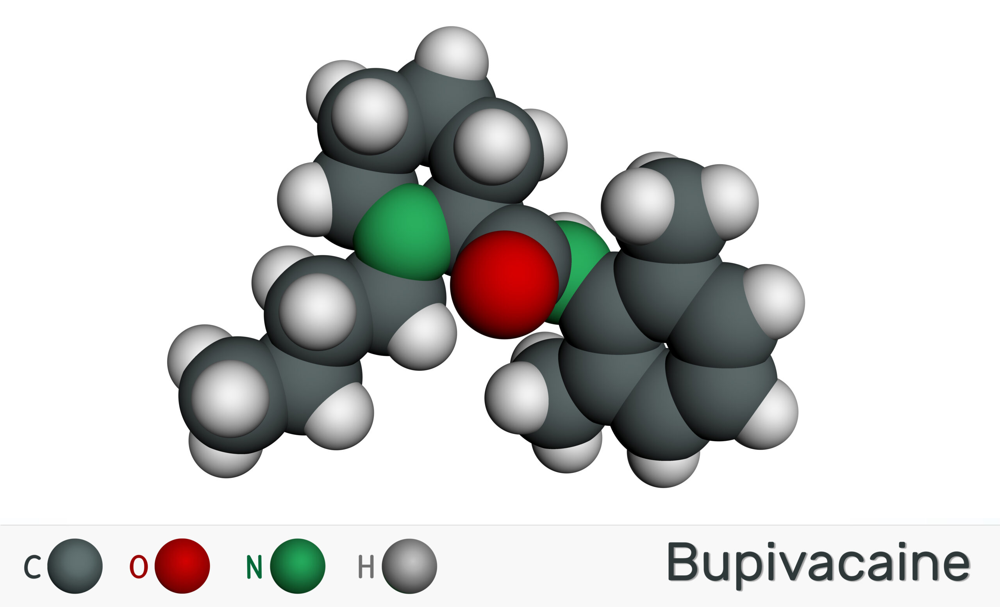

Liposomal bupivacaine presents a promising approach to postoperative pain control. This innovation exemplifies the scientific strides made in understanding the biology of pain and devising methods to provide relief for patients.
Bupivacaine is a long-established local anesthetic used to numb or relieve pain in a particular area. It has been used for decades in surgeries and procedures. However, conventional bupivacaine has a short duration of action and can result in temporary numbness, muscle weakness, and potentially serious systemic toxicity.
Liposomal bupivacaine is a novel formulation designed to overcome these limitations. This advanced version of bupivacaine is encapsulated in small, lipid-based particles called liposomes, enabling a slow, controlled release of the drug over a more extended period.
This unique drug delivery system prolongs the analgesic effect for up to 72 hours postoperatively, significantly reducing the need for opioids in the immediate postoperative period. It provides a stable pain management strategy, fostering a swift recovery and decreasing hospitalization duration. This becomes especially significant in the context of the opioid crisis, as it could contribute to mitigating opioid misuse.
Liposomal bupivacaine has been used in a variety of surgeries, from orthopedic procedures to cesarean sections, with promising results. However, like all medications, it is not without potential side effects, including potential nerve damage, allergic reactions, and potential interactions with other drugs. Therefore, it must be administered under close medical supervision.
Importantly, liposomal bupivacaine represents a shift in postoperative pain management by moving from systemic to localized treatment. It prioritizes patient comfort and quick recovery, aligning with the ethos of patient-centered care. This localized strategy minimizes the side effects associated with systemic pain relievers like opioids, enhancing overall patient safety.
Moreover, liposomal bupivacaine's potential benefits extend beyond individual patient welfare. It could lead to significant cost savings for healthcare systems, primarily by shortening hospital stays and reducing the need for additional pain medications. While it shows promise, it requires further comparative studies and large-scale trials to confirm its benefits and long-term safety. As more research unfolds, it could become a standard in postoperative pain management, paving the way for innovative treatment modalities that redefine patient care.